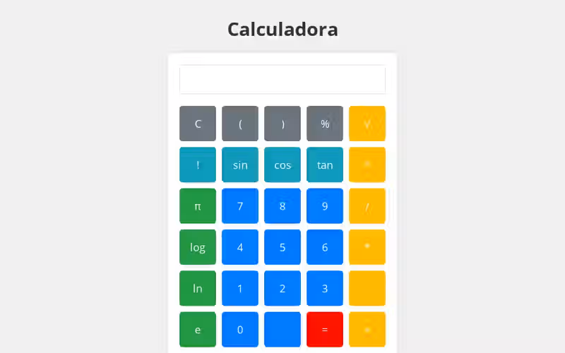
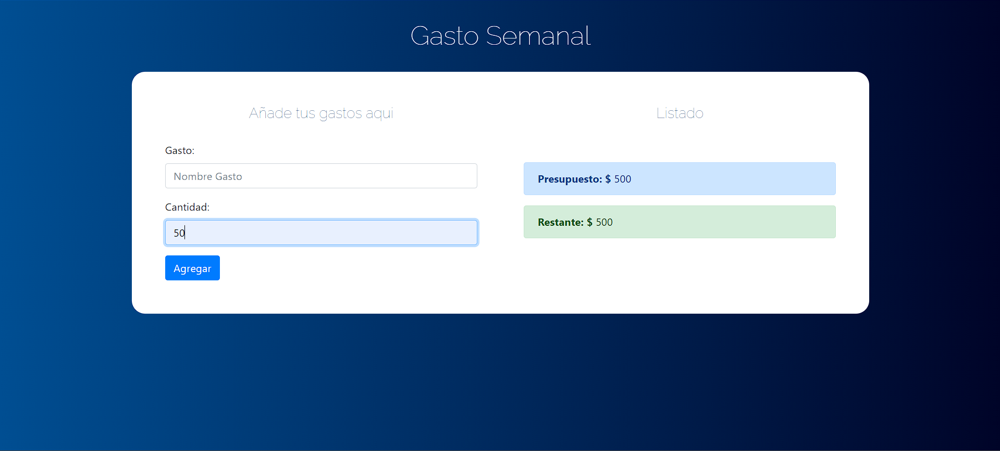
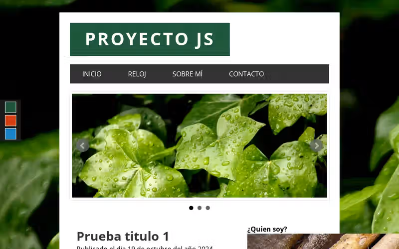
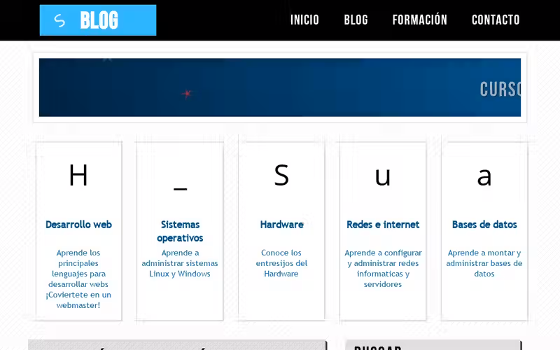

Proyectos realizados:
-
Administrador de pacientes
Patient Admnistrator app - Fullstack app built with React, Node and MongoDB.
App de administración de pacientes - App Fullstack hecha con React. Node y MongoDB -
Web calculator
Math calculator proyect built with JavaScript, HTML and CSS.
Un proyecto de calculadora web elaborado con JavaScript, HTML y CSS. -
Weekly budget - Presupuesto semanal
Budget control app built with JavaScript.
App de control de presupuesto creada con JavaScript. -
blog Jquery
An example of using JQuery and JS - Una muestra de blog con Jquery y JavaScript
-
Blog CSS
An example of a web page using advanced CSS - Una página con CSS avanzado
-
Blog de Café

Un blog en linea que ofrece cursos e informacióon sobre el café.
-
Simulador de inversiones
Un simulador que permite calcular el valor futro de una inversión periódica.
-
Frontendstore
Una vista previa de una tienda en linea, la cual muestra todo el frontend, falta el backended.
-
Calculadora de consumo de gasolina

Una web app que permite calcular el consumo mensual de gasolina.
-
MEAN Stack BlogAPP

Web app for creating and viewing blogs built with Angular, NodeJS, Express, and MongoDB.
Una app web para crear y visualizar blogs creada en Angular, NodeJS, Express y MongoDB.